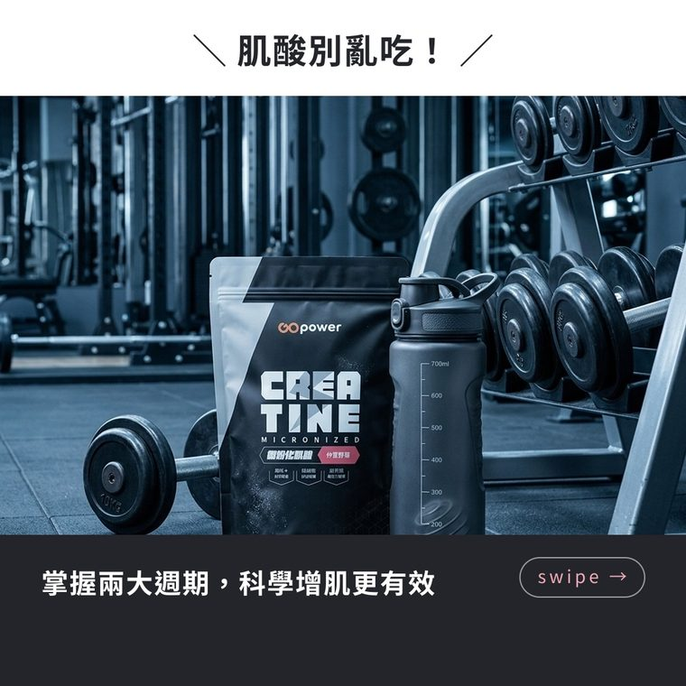
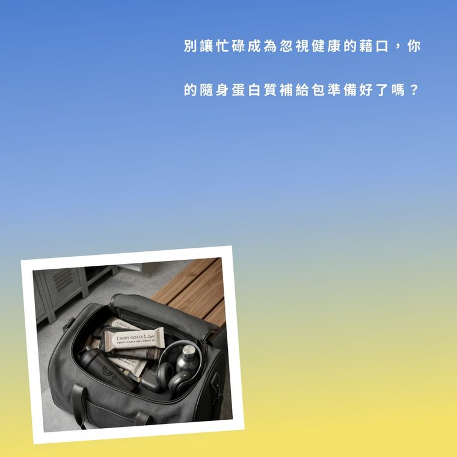
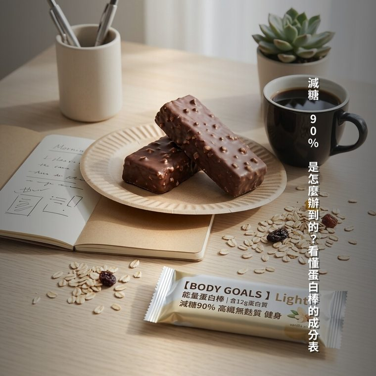

免費資源・看完就能用
蝦皮賣家的 IG／FB 要發什麼？
一週 7 天貼文公式＋30 個發文靈感
你也有那種經驗吧：知道社群要經營，打開發文框，盯著游標三分鐘，最後默默關掉。 問題通常不是懶，是每天都在「現想」——想的成本，比寫的成本高太多了。
這篇給你一套「不用再現想」的方法：先把一週七天的角度固定下來， 再從 30 個題目裡挑著抄。全部用紙筆就能照做，不需要任何工具——工具的事放在文末，不想看可以跳過。
一週 7 天公式：角度固定，題目每週換
核心就一句話：一週只有一天直接賣貨，其他六天讓人記得你。 每篇都在「新品上架歡迎選購」，觸及只會越掉越快；反過來，六天有用或有趣的內容墊著， 賣貨那天的成效反而更好。
七天的骨架長這樣（星期幾可以照自己習慣調換，重點是比例）：
- 週一・知識型——給一則收藏型知識或破除迷思。例：「魚油的 EPA 跟 DHA 差在哪，一分鐘講完」。
- 週二・徵求型——拋一個問題請大家給意見，留言越多觸及越高。例:「想進新口味，你們想要哪一種？」
- 週三・招牌欄目——固定專欄，維持人設。例：「客人最常問的三個問題，一次回答」。
- 週四・互動型——二選一、投票、猜謎。例：「早上空腹這兩杯你選哪杯？」
- 週五・故事型——講一段幕後或轉變，建立信任。例：「當初為什麼開這家店」。
- 週六・賣貨型——本週唯一直接賣貨的一天，用情境包裝、講清楚就好，不用硬推。
- 週日・曬單型——轉貼客人好評或出貨日常，社會證明交給別人的嘴巴講。
七個角度是骨架，不是鐵律——忙的週可以只發三四天，但「賣貨佔比壓低」這件事盡量守住。
30 個發文靈感，直接抄
照類目分好了。就算不是你的類目，多數題目換個主詞也能用。
不分類目，每家店都能用（10 個）
- 「客人最常問的 3 個問題」一次回答——順便省掉之後重複回訊息的時間
- 你商品的「常見錯誤用法」：九成的人都做錯的那一件事
- 出貨幕後：包裹寄出前，你堅持多做的那一道檢查
- 二選一投票：店裡兩款熱門商品捉對，請大家留言選邊站
- 「當初為什麼開這家店」——一段真心話，不用寫成勵志文
- 客人好評截圖＋一句你的感謝（記得先問過對方）
- 本週回購王：這週被回購最多次的商品是它，猜猜為什麼
- 內行攻略：「預算有限的話，我會建議你先買這個」
- 你自己也在用自家商品的真實畫面——桌上、包包裡、廚房裡
- 天氣梗：變天了，你的商品這時候該怎麼用／怎麼保存／怎麼搭
服飾・配件（5 個）
- 一件單品的三種穿搭：上班、約會、週末各一套
- 尺寸怎麼挑不踩雷：一張對照表講清楚，退換貨率跟著降
- 洗滌誤區：這樣洗，衣服壽命少一半
- 顧客回購色排行榜——猜猜第一名是哪個顏色
- 換季收納小技巧，順帶帶出你的收納相關商品
食品・保健（5 個）
- 成分表怎麼看：抓三個關鍵字，不再被話術騙
- 「吃越多越好？」——破解你類目裡最常見的迷思
- 一分鐘食譜：用你的商品做一道超簡單的料理或飲品
- 常溫、冷藏、冷凍差在哪：保存方式一次講清楚
- 早上吃還是睡前吃？時機的差別一分鐘說完
3C・居家（5 個）
- 新機到手先做這三個設定，之後省很多麻煩
- 這樣充電／清潔，多用兩年——延長壽命的使用習慣
- 規格白話文：買這類商品只要看懂「這一項」就不會錯
- 「以為壞掉其實沒有」：三個先自己排查的小步驟
- 桌面／房間改造前後對比，你的商品自然入鏡
手作・文創（5 個）
- 一件作品的誕生：從材料到成品的過程縮時
- 客製案例：客人的故事＋做出來的成品（經同意後分享）
- 材料的講究：為什麼堅持用這種紙／線／木頭
- 失敗品大公開：做壞的那些，和它們教會你的事
- 送禮提案：預算五百以內，你會怎麼組一份禮物
讓公式跑得動的 4 個技巧
- 週日晚上一次排七天。「想」集中在一個晚上做完，平日照表操課，就不會斷更。斷更最常發生在「今天還沒想」的日子。
- 寫不完就先寫標題。七個標題先卡位，內文當天補，比每天從零開始容易十倍。
- 改開頭第一句就好。不管是抄範本還是用 AI 起草，第一句最需要你自己的口氣，後面通常過得去。
- 圖比字重要。1080×1080 的方形圖卡在手機版面最大；沒設計底子就固定兩三種版型輪流用，一致比華麗重要。
照這套公式生出來的圖卡長這樣
下面三張是我們自己的店（賣保健食品）照這套七天公式排出來的貼文圖卡—— 分別是週三招牌欄目、週六賣貨、週一知識型。放這裡當參考：圖卡不用做得多華麗， 「跟角度對得上」比「好看」重要。



三張都是真實生成結果，商品是我們合夥人蝦皮賣場裡真的在賣的東西。
最後才講工具的事
上面整套方法，紙筆＋手機就能做。如果你想連「想題目、寫三個平台的文案、做圖卡」都省下來—— 我們把這套公式做成了一個 Windows 軟體，叫週編： 把商品匯進去、挑好這週要推的，AI 照七個角度把七天的 IG／FB／Threads 文案和貼文圖卡一次生出來，你逐天看過、改過再發。
上市前開放免費試用：14 天、50 次生成、全功能，不用綁卡。 到首頁看它怎麼運作，或直接私訊粉專打「試用」兩個字拿序號。
每週日晚上，我們也會在粉專發「本週靈感日曆」——下週七天的發文角度直接給你抄，不用工具也能用。